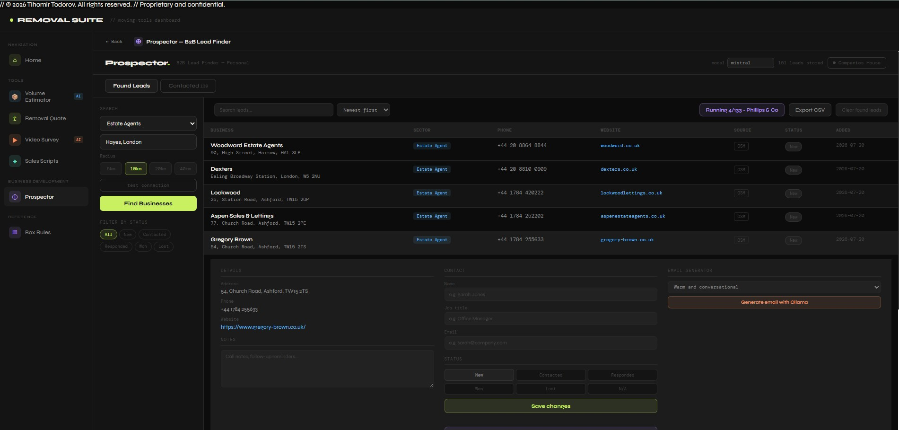
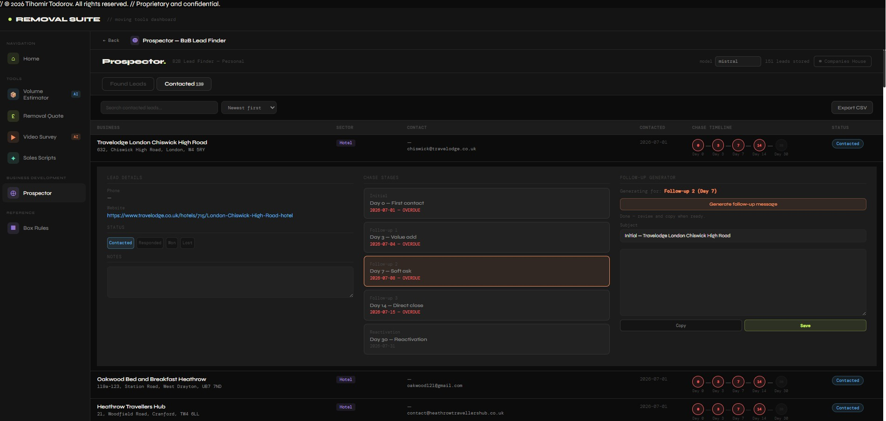

Outbound / Personal IP
An experimental B2B lead-generation pipeline, built to reduce dependency on paid inbound lead sources. Still evolving — this is an honest look at a project in progress, not a finished product.
System Flow
The business's lead generation was entirely dependent on paid inbound sources — comparison sites that charge a premium per lead, with no control over volume, targeting, or timing.
Open an outbound channel that didn't depend on paid lead providers, built as a genuine sales pipeline rather than a raw contact list — something that could be tested, refined, and expanded over time rather than a one-off scraper.
Lead discovery runs on open map data rather than a paid data source. An AI model enriches each result by reading the prospect's website and drafting a tailored cold email. A pipeline tracks each prospect through a five-stage chase timeline, mirroring how a real sales process actually moves rather than treating outreach as a single blast.
Built and run locally, as personal IP distinct from the internal company toolset. This is still an active, evolving project rather than a finished, deployed system.
In its current state, Prospector has opened an outbound lead channel that doesn't rely on paid comparison sites, with a pipeline structure built around how sales conversations actually progress. It's early — I'm not claiming a mature, measured impact yet, and I'd rather be direct about that than overstate it.
Free, open data sources can replace paid ones for lead discovery if you're willing to build the enrichment layer yourself. The harder problem turned out to be less about finding prospects and more about writing outreach that doesn't read as generic.
Engineering Decisions
In the Field


Next